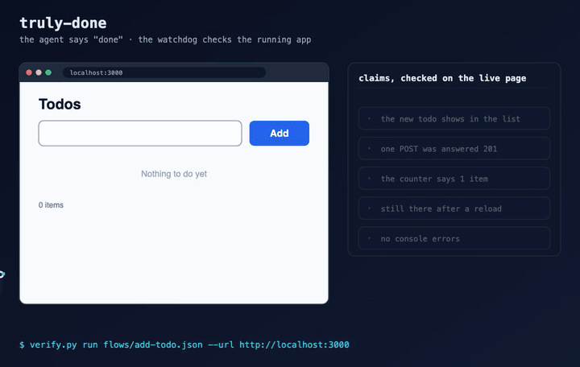

스킬 2개
에이전트 엔지니어링
에이전트가 불러와 따르는 스킬과 워크플로를 Claude Code 플러그인과 GitHub Action으로 패키징합니다.
스킬 2개
에이전트가 불러와 따르는 스킬과 워크플로를 Claude Code 플러그인과 GitHub Action으로 패키징합니다.
96% vs 50%
주장보다 eval이 먼저입니다. 상태 테스트 11개에서 adhd-status의 점수는 96%, 스킬 없는 같은 모델은 50%입니다. 상태 확인 1회당 비용도 35% 줄여 줍니다.
7.4 Scorecard
모든 저장소에 서명·검증 가능한 릴리스와 OpenSSF Scorecard를 적용합니다. 제 에이전트 환경은 모든 도구 호출을 실행 전에 보안 정책과 대조합니다.
100/100
아이디어에서 출시까지: 문서, CI, 릴리스, 그리고 지금 누구나 플레이할 수 있는 게임 두 개.
16h → 3h
다중 프로그램 비영리단체의 급여 배분 계획을, 보조금 잔액 점검을 내장해 자동화했습니다.
−70%
Ransa에서 설계한 부서 간 티켓팅 시스템. 유지보수 비용이 약 20% 줄었습니다.
−30%
Gestiona365에서 재설계한 결제 프로세스와 Excel 기반 CRM·견적 도구.
96% vs 50%
제 오픈소스 에이전트 스킬 adhd-status는 상태 테스트 11개에서 96%, 스킬 없는 같은 모델은 50%입니다.
Python · SQL · Power BI · Tableau · Excel · JavaScript · GitHub Actions · Claude Code · Codex · Cloudflare
에이전트 스킬 · GitHub Action
정말 끝났나요? 앱에서 증명하세요.
실행 중인 앱에서 변경 사항이 실제로 작동하는지 증명하는 Claude Code용 스킬. 헤드리스 Chrome으로 앱을 열어 사용자처럼 클릭하고 입력하며, 라이브 페이지에서 주장 하나하나를 확인해 통과, 실패, 판단 불가를 스크린샷과 함께 알려줍니다. 내 컴퓨터에서만 실행: 텔레메트리 없음, 클라우드 없음, 계정 없음.

에이전트 스킬 · GitHub Action
컴팩트 전에 토큰부터 파악하세요.
Claude Code용 실시간 읽기 전용 토큰 미터: 세션별 컨텍스트가 얼마나 찼는지, 자동 컴팩트까지 남은 턴 수, 콜드 캐시 경고, 한 번도 호출하지 않는 MCP 서버와 스킬을 보여줍니다. 어드바이스 모드는 줄이고 개선할 것을 제안합니다: 컴팩트, 새 세션 시작, 다듬기, 계획과 구현에 서로 다른 모델 쓰기, 로컬 모델, 새 스킬. 오프라인 실행: 텔레메트리 없음, 훅 없음, 설정 변경 없음.
v0.5.0 신기능: CLAUDE.md, 규칙, 스킬 헤더가 매 호출마다 드는 비용, 상태 표시줄 미터, 그리고 각 절감 조치로 아끼는 토큰.

RANSA
모든 요청이 기록·배정되고 기한 내에 처리되도록 만든 헬프데스크 티켓팅 시스템.
AS400 청구
AS400에서 운영되는 청구 시스템의 비주얼 프론트엔드를 안정화하고 테스트했습니다.
Gestiona
고객·공급업체 마스터 데이터를 구축해, 영업과 구매가 하나의 소스로 일하게 했습니다.
부동산 서비스
전화 상담이나 부동산 분석을 바탕으로 작성하는 부동산 관리 서비스 견적.
ICC
개발자 없이도 팀이 페이지 단위로 확장할 수 있는 모듈형 사이트.
채용
AI 에이전트, 개발자 도구, 자동화 분야의 정규직 또는 계약직. 원격 또는 미국 버몬트.
컨설팅
팀이 코딩 에이전트를 어떻게 쓰는지 검토하고, 시간과 비용이 어디로 새는지 측정해, 우선순위를 매긴 짧은 개선 목록을 드립니다.
컨설팅
여러분의 워크플로에 맞춘 에이전트 스킬. eval, 서명된 릴리스, 보안 점검까지 갖춰 팀이 바로 설치할 수 있습니다.
에이전트가 무엇을 해야 하는지 알려주세요. 어떻게 만들고, 테스트하고, 작동을 증명할지 말씀드리겠습니다.